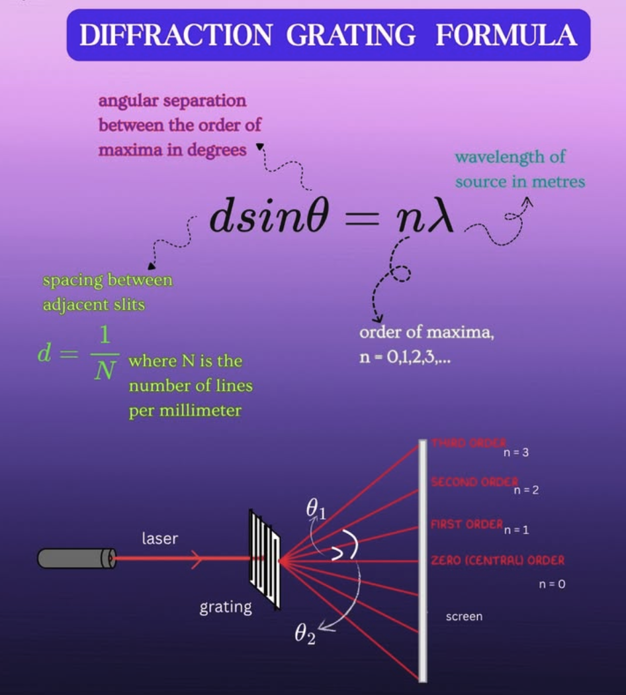
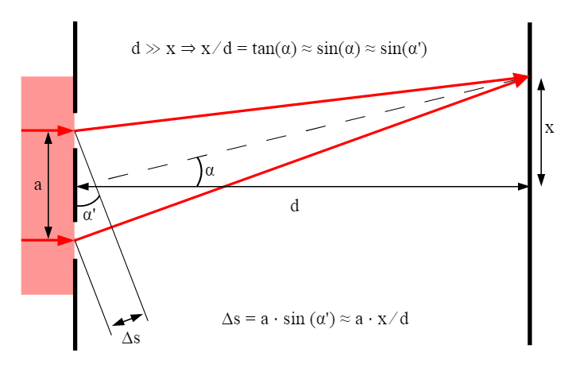

Diffraction Grating Formula


You have identified a famous paradox: the Fourier transform is a global integral (requiring information from \(-\infty\) to \(\infty\)), so how can a local photon "know" how to behave?
The answer is that a light ray does not calculate spatial frequency, and it actually does not "decide" to bend in just one direction. To understand what is physically happening at the microscopic level, we have to stop thinking of light as straight "rays" and start thinking of it as a wave. Here is how the local physics creates the global math:
1. The Local Reality: Scattering Everywhere (Huygens' Principle)
When structures are on the scale of the wavelength of light (like the microscopic ripples etched into this hologram), the "ray" approximation of light completely breaks down.
Instead, light behaves according to the Huygens-Fresnel principle . This principle states that every single microscopic point on a wavefront acts as a tiny, independent source of a new spherical wave.
- When the incoming flat wave hits a single microscopic bump on the glass, it does not bend in one specific direction.
- Instead, the bump scatters the light outwards in a spreading, spherical dome—literally in all forward directions at once.
- The *only* thing the local bump does is delay the wave slightly based on its physical height (its phase delay). It does not need any global information to do this; it just physically slows the light down at that exact \((x,y)\) coordinate.
2. The Global Result: Constructive Interference
So, if every microscopic point on the glass is just scattering light blindly in every direction, why do we see a clean, single beam of light bent at a specific angle \(\theta\)?
The answer is interference.
Because a spatial frequency (\(f\)) is a *repeating* periodic pattern, you have millions of these bumps spaced at a very specific, mathematically perfect distance from one another.
- As millions of these tiny spherical waves expand into the air, they overlap and crash into each other.
- In almost every direction, the "peaks" of some waves hit the "troughs" of other waves. They cancel each other out completely into darkness. This is destructive interference.
- However, because the bumps are spaced at exactly frequency \(f\), there is a magical geometric angle (\(\theta\)) where the peaks of *all* the scattered spherical waves line up perfectly. They add their energies together to form a bright, powerful new wavefront traveling in that specific direction. This is constructive interference.
The Resolution to the Paradox
The spatial frequency (\(f\)) does not exist as a calculation inside the photon. The spatial frequency is simply the physical distance between the microscopic bumps on the glass.
The light hitting a single bump does not know about the bumps next to it. It just scatters. The "bending" of the light is actually a global macroscopic illusion. The light wave explores every possible path locally, but because of the physical spacing of the bumps (the frequency \(f\)), the universe cancels out every path except the one strictly dictated by the grating equation (\(\sin \theta = \lambda f\)).
So, the math requires global information to *calculate* the frequency, but the physical light simply scatters locally and lets interference do the sorting.